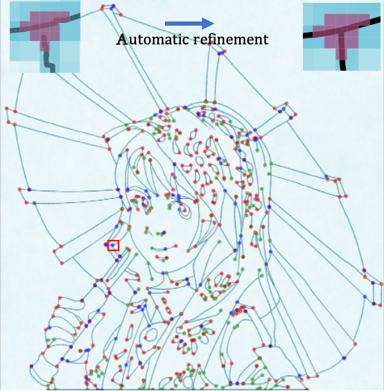
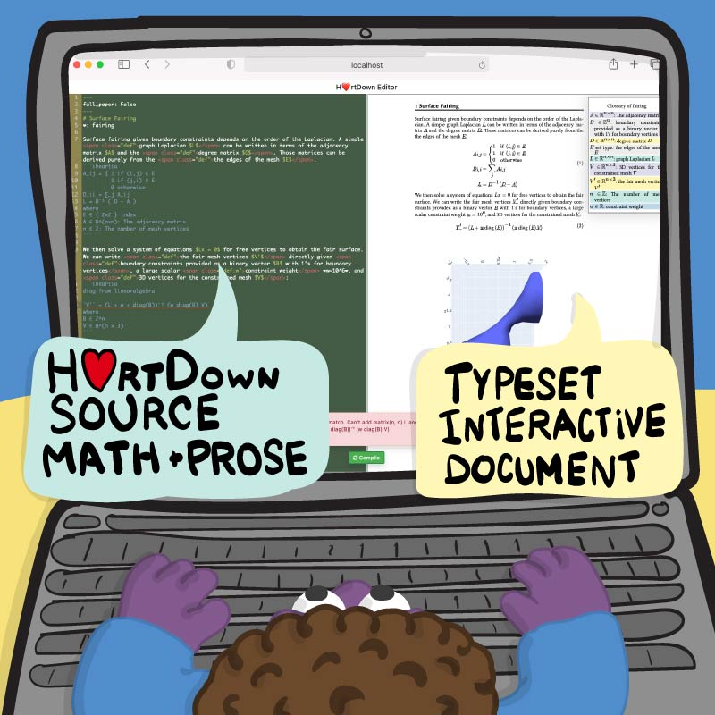
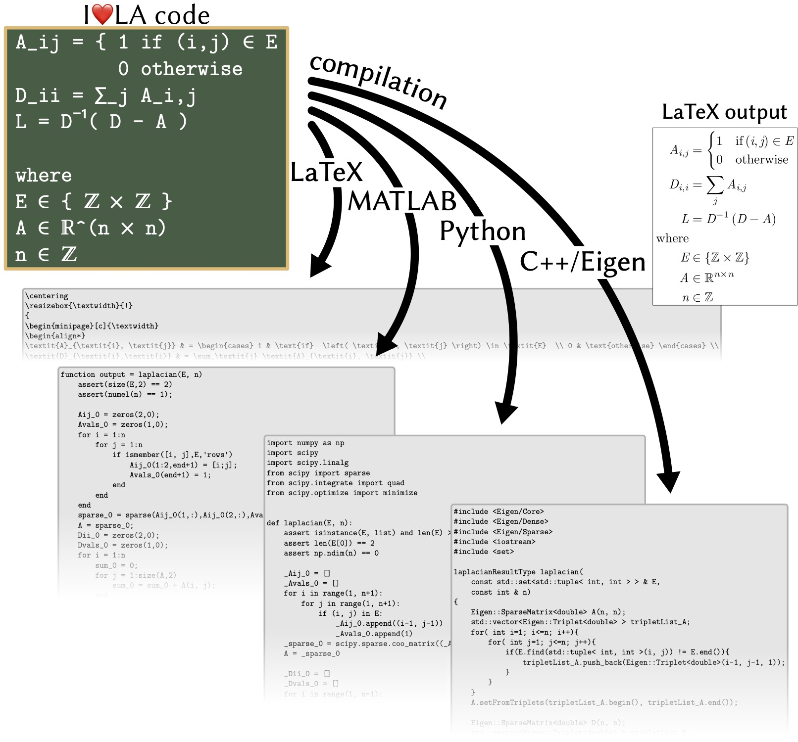

Yong Li is a postdoctoral researcher at South China University of Technology. While working on his PhD, he was advised by Yotam Gingold in the Department of Computer Science at George Mason University. Before that he was a senior software developer at Baidu. He received his bachelor and master degree from Sun Yat-sen University in June 2013 and 2015 respectively. His research interests include geometry processing, human-computer interaction, deep learning and programming languages.

Deep Sketch Vectorization via Implicit Surface Extraction
Chuan Yan, Yong Li, Deepali Aneja, Matthew Fisher, Edgar Simo-Serra, Yotam Gingold
ACM Transactions on Graphics (TOG) 43(4). Will be presented at SIGGRAPH 2024.
Project page |
Paper

H❤️rtDown: Document Processor for Executable Linear Algebra Papers
Yong Li, Shoaib Kamil, Alec Jacobson, Yotam Gingold
ACM SIGGRAPH Asia 2022 (Conference Paper)
Project page |
Paper

I❤️LA: Compilable Markdown for Linear Algebra
Yong Li, Shoaib Kamil, Alec Jacobson, Yotam Gingold
ACM Transactions on Graphics (TOG) 40(6). Presented at SIGGRAPH Asia 2021.
Rethinking ML Papers - ICLR 2021 Workshop (oral presentation and exhibit)
Project page |
Paper
 Research Intern mentored by Shoaib Kamil
Research Intern mentored by Shoaib Kamil
May. - Aug. 2022
May. - Aug. 2021
Senior Software Developer
May. 2015 - Aug. 2019
 Co-Mentor at the Summer Geometry Initiative (SGI) at MIT
Co-Mentor at the Summer Geometry Initiative (SGI) at MIT
I❤️LA convex optimization cookbook
Mentors: Alec Jacobson, Yotam Gingold and Yong Li
Aug. 2022
 Visiting the Geometry Collective at CMU, mentored by Keenan Crane
Visiting the Geometry Collective at CMU, mentored by Keenan Crane
May. - Aug. 2022
 Talk at Toronto Geometry Colloquium
Talk at Toronto Geometry Colloquium
"I❤️LA: Compilable Markdown for Linear Algebra"
Nov. 2021